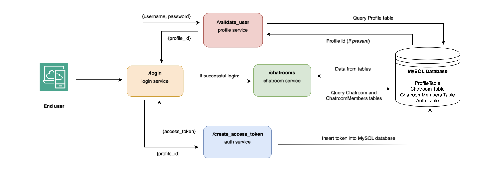

Cloud Microservices Chatroom
Overview: Developed a scalable chat application using Dockerized microservices deployed on AWS. I architected and deployed independent services to handle messaging, user management, and data storage, enabling concurrent real-time communication.
Objectives & Outcomes
The project’s goal was to decouple components of a chat application into independent microservices for better maintainability and scalability. I deployed each service in Docker containers on EC2 instances, configured security groups and public IPs, and integrated AWS services to achieve a reliable, fault-tolerant system. The result was a robust chatroom that supported seamless messaging for multiple users with persistence and security.
Key Skills & Technologies
- Docker & Docker Compose for containerization
- AWS EC2 and Security Groups for deployment and network configuration
- RESTful API design to decouple services
- DynamoDB for low-latency, redundant chat history storage
- AWS Cognito for user authentication and authorization
- CloudFormation for infrastructure as code and automated provisioning
Lessons Learned
I gained expertise in coordinating multiple microservices, handling inter-service communication, and ensuring system resilience. I also learned to troubleshoot AWS networking issues, optimize DynamoDB throughput, and manage IAM roles for secure access.
Back to Projects